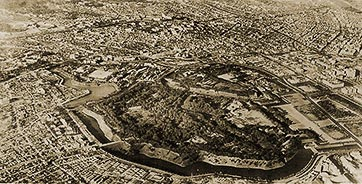

|
j
a v a s c r i p t |
April 15, 1945 — "16 Miles To Berlin"
A pass is no longer required to cross the Jones Bridge; it's open to vehicular traffic too. Water was off this morning; perhaps the Metropolitan Water Works economizing. PLN: "Imperial Palace Pounded" — Radio Tokyo talked about the Meiji Shrine, the Imperial Palace and the Omiya and Akasaka detached palaces.

Tokyo Imperial Palace
The Post Office will reopen tomorrow at the Watson Building (the magnificent Post Office Building is in ruins). Troops are reported to be closing in on Baguio. One source said that Baguio was taken; another said MacArthur revised upward the number of Japanese soldiers in the country to 150,000. |
|
|
|
|